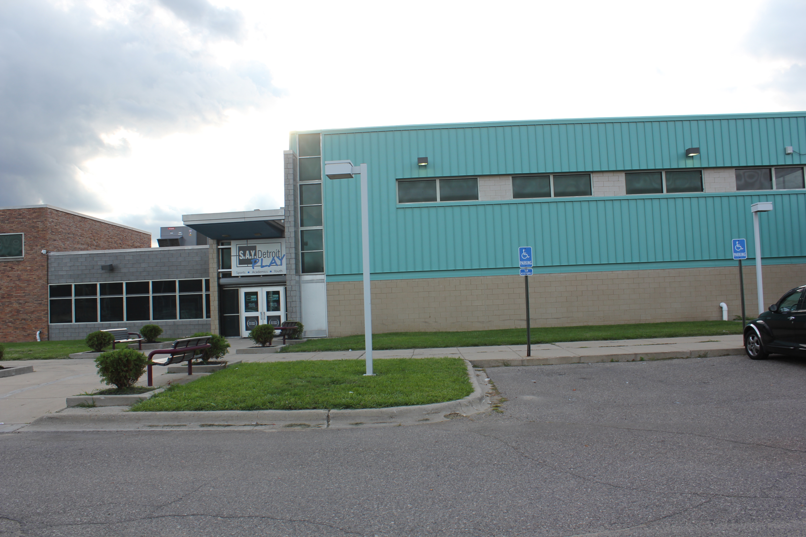

S.A.Y. Play Collaboration
S.A.Y. Detroit is an umbrella organization founded by internationally renowned author Mitch Albom, aimed at improving the lives of Detroit’s neediest citizens via shelter, food, medical care, and education initiatives. S.A.Y. Detroit’s newest project is S.A.Y. Play Detroit Center, a youth community center which uses sports as the “hook” for academic achievement. Students gain access to the center by pledging to attain and maintain a 3.0 GPA and school attendance. After a nourishing meal and completing the mandatory hours of tutored studies, students can participate in football, basketball, music, and dance programs. Through the FIRST STEM Equity Community Innovation Grant, Frog Force is a part of a coalition of organizations adding FIRST’s “Sports for the Mind” as a natural extension of the center’s mission to help at-risk students graduate from high school, go on to college, and ultimately compete for great jobs.
S.A.Y. Play is located in one of the most violent neighborhoods in the nation. It currently draws students from three schools in the immediate vicinity. These are Title 1 schools serving a predominantly African American population. S.A.Y. Play started 5 sustainable teams for the 2016 Fall season: 3 upper elementary FIRST LEGO League (FLL) teams and 2 middle school FIRST Tech Challenge (FTC) teams.
As part of a collaborative effort, Frog Force provided essential FIRST program and technical expertise. Drawing from our experience as a partner with Detroit Hispanic Development Corporation, Frog Force helped design a build space, purchase tools and equipment, register teams and apply for grants. Frog Force also provided pre-season workshops, an open house, coach training, mentor support and team mentorship.
The 3 FLL teams, Jaguar Pride, Panthers and Hustlin’ Huskies each completed several robot missions, researched an animal of their choice and learned about FIRST core values. They went on to compete at the Detroit Science Center qualifier. It was a crazy and exciting day as the students learned the ins and outs of competition and judging as well as explored the many hands on STEM activities at the Science Center.
The 2 FTC teams, Steam Team and Robot Warriors, competed in their first tournament in Novi. It was a great opportunity to learn the game and test out their robots. In December, Steam Team and Robot Warriors also competed at University of Detroit Mercy. Steam Team was the 3rd seeded alliance captain after qualifiers and advanced to the Finals! Robot Warriors made us proud by winning the Connect Award for their support of the FLL teams at S.A.Y. Play and spreading word of FIRST robotics at the center in their neighborhood.
Thanks to a fun and successful season, the students and staff at S.A.Y. Detroit Play Center have caught the FIRST spirit. A Junior FIRST LEGO League team is in the works for next Fall and Jenell Mansfield, Director of Academics, is already asking about starting a FRC team to continue their progression of programs as the FTC students move on to high school.
-

S.A.Y. Detroit Play Center